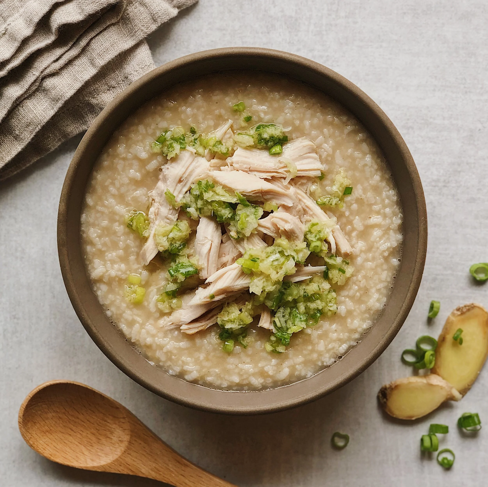
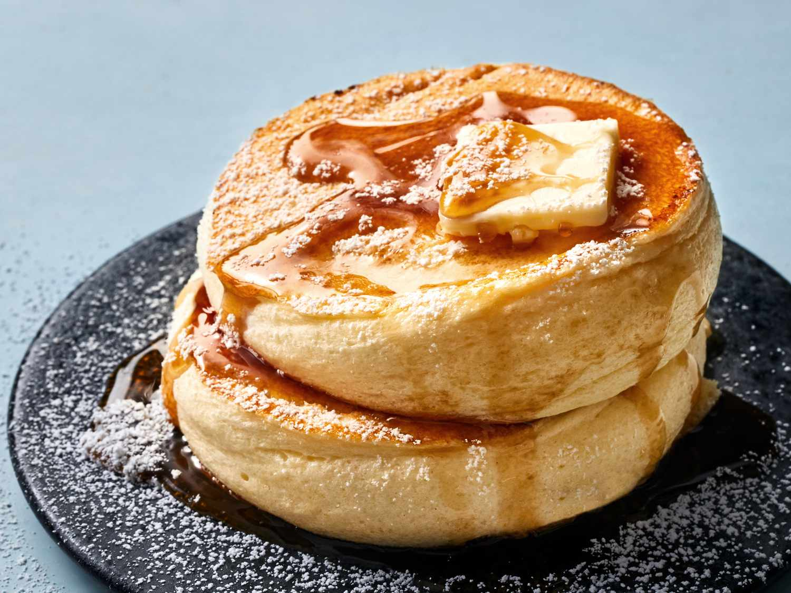
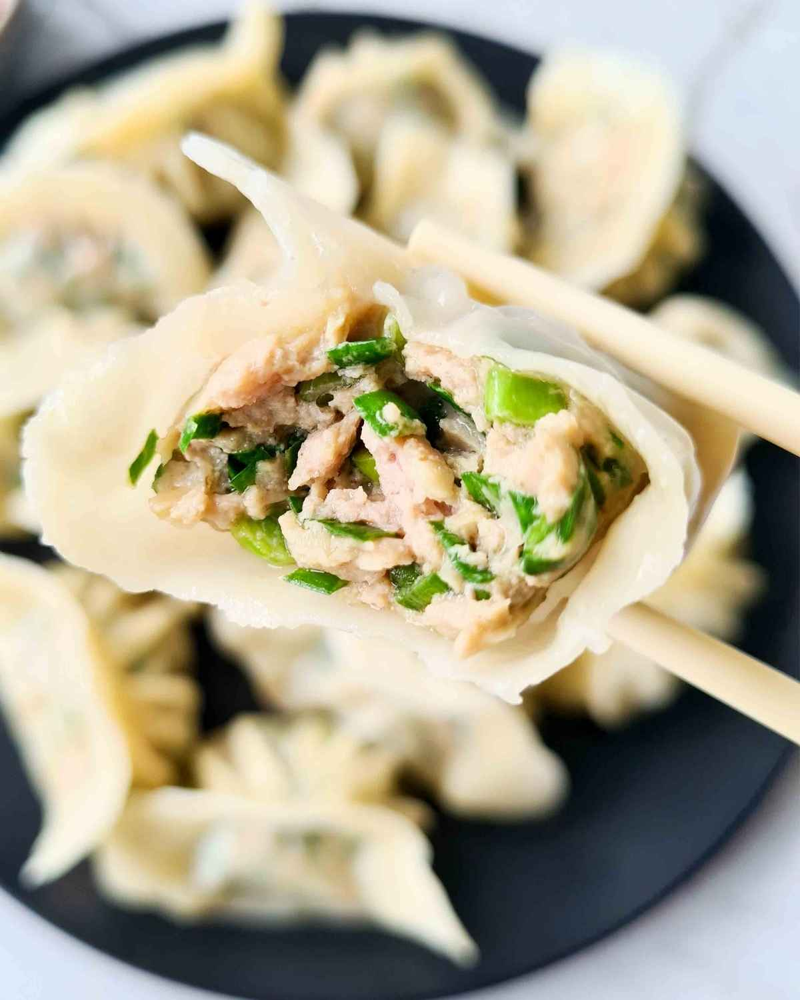
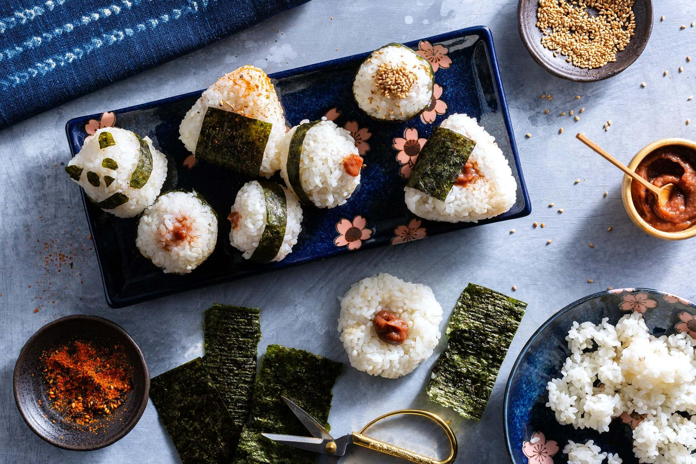

Ten morning ideas from soft porridges to fluffy pancakes—each with a flavor note and simple steps you can follow at home.
Chicken congee (jook)

Silky, mild, and deeply comforting; ginger and white pepper add a warm, savory lift without heaviness.
How to make it
- Simmer 1 cup rinsed rice with 8–10 cups water or stock until it breaks down, 45–60 minutes, stirring often.
- Shred cooked chicken and add it in the last 15 minutes, or poach chicken separately and stir in at the end.
- Season with salt, white pepper, and a little grated ginger.
- Serve with sliced scallions, cilantro, sesame oil, and soy sauce on the side.
Japanese soufflé pancakes

Cloud-light and barely sweet, with a gentle eggy richness and a soft bounce from whipped whites.
How to make it
- Separate eggs; beat yolks with milk, vanilla, and a spoon of sugar until smooth, then sift in flour.
- Whisk whites to stiff peaks with the remaining sugar, then fold gently into the yolk batter in thirds.
- Cook thick rounds on very low heat in a covered nonstick pan, flipping once when set underneath.
- Stack and top with butter, maple syrup, or fresh berries.
Steamed pork & chive dumplings

Juicy, savory filling with bright chive and a tender wrapper—best hot from the steamer.
How to make it
- Mix ground pork with chopped chives, soy sauce, sesame oil, ginger, and white pepper.
- Fill round wrappers with a small scoop, pleat, and seal with a dab of water.
- Line a steamer with cabbage leaves or parchment; steam 10–12 minutes until cooked through.
- Serve with black vinegar and chili oil for dipping.
Onigiri

Mild rice, salty-sweet flaked salmon, and optional nori—clean, portable, and satisfying.
How to make it
- Cook short-grain rice; while warm, season lightly with rice vinegar, sugar, and salt if you like.
- Flake cooked salmon and mix with a touch of soy and mirin.
- Wet hands with salted water, press a portion of rice flat, add filling, and shape into triangles or balls.
- Wrap the base with strips of nori just before eating so it stays crisp.
Miso soup & steamed rice

Salty-savory miso umami with a light seaweed backdrop—classic alongside plain rice.
How to make it
- Bring dashi (kombu and bonito or instant granules) to a bare simmer; remove from heat.
- Soak wakame in water; slice tofu into cubes.
- Whisk miso paste with a little hot broth until smooth, then stir into the pot—never boil miso.
- Add tofu and wakame; garnish with scallions. Serve with freshly steamed rice.
Korean egg rice (gyeran-bap)

Creamy egg yolk and warm rice with a hit of soy and sesame—rich, simple, and very fast.
How to make it
- Scoop hot rice into a bowl.
- Fry an egg sunny-side up or soft; slide it on top.
- Drizzle soy sauce, sesame oil, and sprinkle toasted sesame seeds and sliced scallions.
- Break the yolk and mix everything together before eating.
Thai rice porridge (jok)

Soft rice porridge with garlic, ginger, and cilantro—bright, aromatic, and gently spiced.
How to make it
- Simmer rice in plenty of chicken stock until very soft, 30–40 minutes; whisk to break grains if needed.
- Season with fish sauce, white pepper, and a little soy.
- Top with shredded chicken, a soft-poached egg, fried garlic, ginger strips, and cilantro.
- Squeeze lime at the table for acidity.
Scallion pancakes

Flaky, chewy layers with toasted scallion and sesame—salty and crisp at the edges.
How to make it
- Knead a simple hot-water dough; rest 30 minutes.
- Roll thin, brush with oil, scatter chopped scallions and salt, roll into a coil, then flatten again.
- Pan-fry in a thin layer of oil over medium heat until golden on both sides.
- Cut into wedges and serve with soy-vinegar dip.
Matcha overnight oats

Earthy matcha balanced by milk and a touch of honey—cool, creamy, and lightly sweet.
How to make it
- Whisk matcha powder with a splash of warm water until smooth.
- Combine rolled oats, milk (or oat milk), yogurt, chia seeds, honey, and the matcha in a jar.
- Stir well, cover, and refrigerate overnight.
- Top with berries, banana, or toasted coconut in the morning.
Kimchi fried rice
Tangy, spicy kimchi with savory rice and optional pork—bold and energizing for early risers.
How to make it
- Chop aged kimchi small; save some juice for the pan.
- Stir-fry kimchi (and diced pork or spam if using) in oil until fragrant.
- Add day-old cold rice; break up clumps and fry until hot.
- Season with soy and kimchi juice; top with a fried egg and sesame seeds.